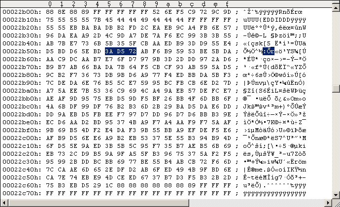

Main Index PatchesRapidLok2 patches: Disable the key checks
In order to test remastered RapidLok2 disks it might be helpful having the Key checks disabled. All other integrity checks remain active. After stepping the head to Track 36 we simply branch execution to the $052F File transfer management routine. See following code snippet. --- ORIGINAL CODE ------------------------------ 051D: B5 85 LDA $85,X ; [$86-$8A] = length of $7B extra sectors on tracks 33-29 051F: 38 SEC 0520: F9 00 02 SBC $0200,Y ; subtract corresponding Track Key ([$021A-$021E] = Track 29-33 Keys) 0523: 90 02 BCC $0527 ; #7Bs < Key: CF=0, #7Bs >= Key: CF=1 0525: 49 FF EOR #$FF ; A:=-A-1 (ones complement), if #7Bs >= Key (CF=1) Jump from $0523: 0527: 69 04 ADC #$04 0529: 30 8C BMI $04B7 ; all ok if: ( |#7Bs-Key| <= 4 ). Avoid this branch!!! 052B: C8 INY 052C: CA DEX 052D: D0 EE BNE $051D ------------------------------------------------ --- PATCHED CODE ------------------------------- 0529: 24 98 BIT $98 ; dummy, corrects sector checksum ------------------------------------------------ The calculation is as follows. The 2 bytes we change ($0529/$052A) have the following "parity" (the decrypted bytes are used for this here): original: $30 xor $8C = $BC patched: $24 xor $.. = $24 Hence $BC xor $24 = $98 is to be used for correcting the sector parity. As all RapidLok routines are encrypted on disk we have to encrypt our patches before we apply them to the G64 images. This happens as usual. --- ORIGINAL DECRYPTION ------------------------ 0529 = |FF 12| xor |CF 9E| = |30 8C| ------------------------------------------------ --- MANIPULATED DECRYPTION --------------------- 0529 = |EB 06| xor |CF 9E| = |24 98| ------------------------------------------------ The $05xx buffer is read by the $0300-B routine: Job #2, Track 18 Sector 18. Note on RapidLok address restrictions: There is no problem with the above patch addresses. Applying the patch to the G64 image I always use the Maverick v5.04 GCR Editor (in WinVice) to "edit" the G64 images. Please refer to the RL6 handbook for instructions. Don't save your modifications to disk/G64 from within the GCR Editor! Use "UltraEdit" in hex-mode instead to apply the changes directly to the G64 images (GCR code). The following Figure #1 shows the original Track 18 Sector 18 of a RapidLok2 G64 image, Figure #2 shows the modifications.
Figure #1: Original Track 18 Sector 18 of a RapidLok2 disk (PAL).
Figure #2: Patched Track 18 Sector 18 ($0529 patch).Remastering example Use "nibwrite -S18 -E18 patched.g64" to remaster the patched Track 18 at about 300rpm. Watch nibwrite's console log, don't let it truncate track data.